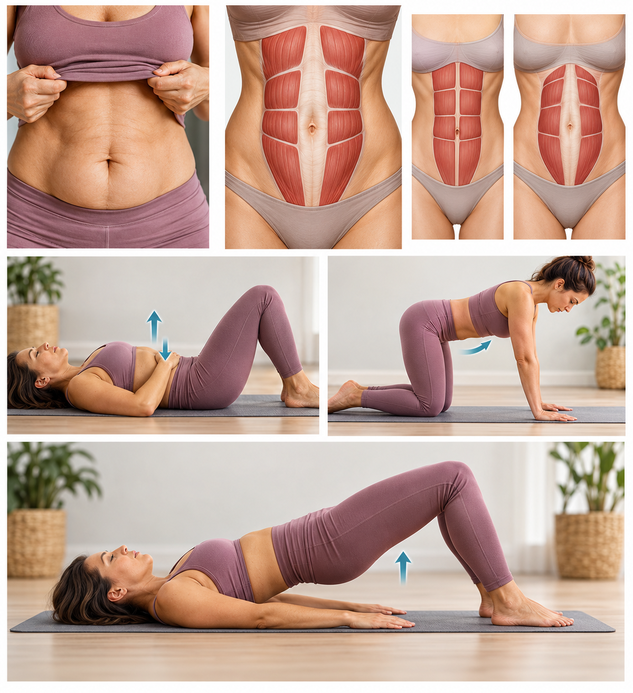
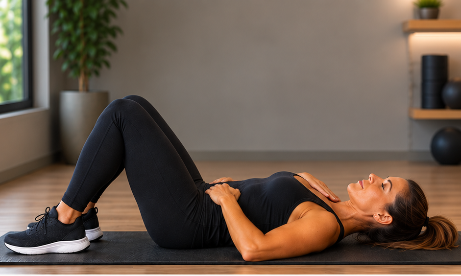
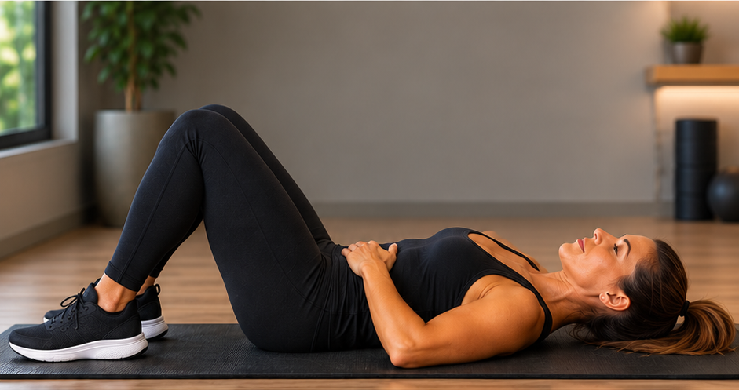
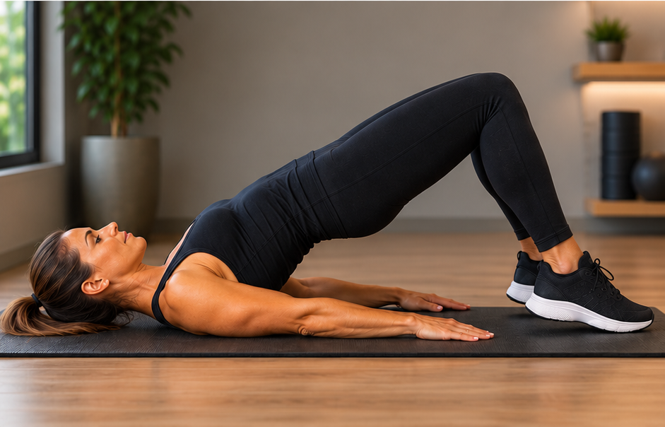

Diástase abdominal depois dos 50
A barriga que não "some" mesmo com dieta e exercício pode não ser gordura — pode ser diástase abdominal. Entenda o que é, por que ela aparece com a idade e como fortalecer o core com segurança.
Se você já se sentiu frustrada com uma barriga que continua parecendo "estufada" mesmo depois de perder peso, ou sente as costas cansarem mais rápido do que antes, vale conhecer um assunto pouco falado: a diástase abdominal. Ela é comum, tem solução na maioria dos casos, e quanto antes for identificada, mais fácil é cuidar dela.
O que é diástase abdominal
Os músculos do abdômen são divididos ao meio por uma faixa de tecido chamada linha alba. Quando essa faixa se estica e enfraquece, os dois lados do músculo se afastam — isso é a diástase. O resultado é uma barriga que "estufa" para frente, principalmente quando você se senta, tosse ou faz força, mesmo sem excesso de gordura.
Por que ela aparece ou piora depois dos 50
É comum associar diástase apenas à gravidez, mas esse é só um dos caminhos possíveis — e nem é o mais frequente depois dos 50 anos. Com o tempo, o corpo passa por mudanças que enfraquecem naturalmente essa região:
- Perda gradual de massa muscular, algo que acontece com todo mundo a partir de uma certa idade
- Tecido conjuntivo mais frágil e menos elástico
- Acúmulo de gordura na região abdominal, que aumenta a pressão interna
- Anos de sedentarismo ou de exercícios que sobrecarregam o abdômen sem fortalecê-lo de verdade
- Postura inadequada mantida por longos períodos
Ou seja: qualquer mulher pode desenvolver diástase com a idade, tenha passado por gravidez ou não.
Como perceber em casa
Dá pra fazer um teste simples: deite-se de costas, com os joelhos dobrados e os pés apoiados no chão. Coloque os dedos horizontalmente sobre a barriga, na altura do umbigo. Levante levemente a cabeça e os ombros, como se fosse fazer um abdominal, e sinta se há um espaço ou "vão" entre os dois lados do músculo. Se sentir uma abertura de dois dedos ou mais, vale conversar com um profissional para confirmar.

Outros sinais incluem barriga que "estufa" ao fazer força, dor lombar sem causa aparente, e sensação de fraqueza no centro do corpo.
Por que cuidar disso importa
O core não é só estética — é a base que sustenta sua coluna, sua postura e sua capacidade de fazer tarefas simples do dia a dia, como levantar um peso ou até tossir sem desconforto. Um core enfraquecido pela diástase pode levar a mais dores nas costas e menos estabilidade com o passar dos anos.
O que evitar
Alguns exercícios tradicionais de abdômen podem piorar a diástase em vez de ajudar, porque aumentam a pressão para fora em vez de fortalecer de dentro para fora:
- Abdominais tradicionais (o movimento de "sentar" repetidamente)
- Pranchas completas antes de fortalecer a base
- Exercícios que forçam muito a respiração presa, como levantar peso segurando a respiração
Exercícios seguros para começar
Antes de partir para os exercícios, um lembrete importante:
-
Respiração diafragmática. Deitada, joelhos
dobrados, uma mão no peito e outra na barriga. Inspire pelo nariz
enchendo a barriga (não o peito), e solte o ar lentamente pela
boca, sentindo a barriga "abraçar" a coluna. Esse é o ponto de
partida de todo o fortalecimento seguro do core.

-
Ativação do transverso do abdômen. Na mesma
posição, ao soltar o ar, contraia suavemente a barriga como se
estivesse "puxando o umbigo para dentro", sem prender a
respiração. Segure por 5 segundos e solte.

-
Elevação pélvica controlada. Deitada, joelhos
dobrados, eleve o quadril lentamente até formar uma linha reta
dos joelhos aos ombros, mantendo a ativação do abdômen o tempo
todo. Desça com controle.

Comece com 3 séries de 8 a 10 repetições, sempre priorizando a qualidade do movimento — e não a quantidade.
Quando procurar um fisioterapeuta
Se o afastamento for grande, se houver dor persistente, ou se você simplesmente quiser um diagnóstico mais preciso, um fisioterapeuta especializado em assoalho pélvico pode avaliar o grau da diástase e montar um plano individual. Na maioria dos casos, o problema tem solução com o trabalho certo.
Importante: este conteúdo é educativo e não substitui avaliação, diagnóstico ou acompanhamento profissional. Antes de iniciar qualquer programa de exercícios, converse com um médico ou fisioterapeuta.